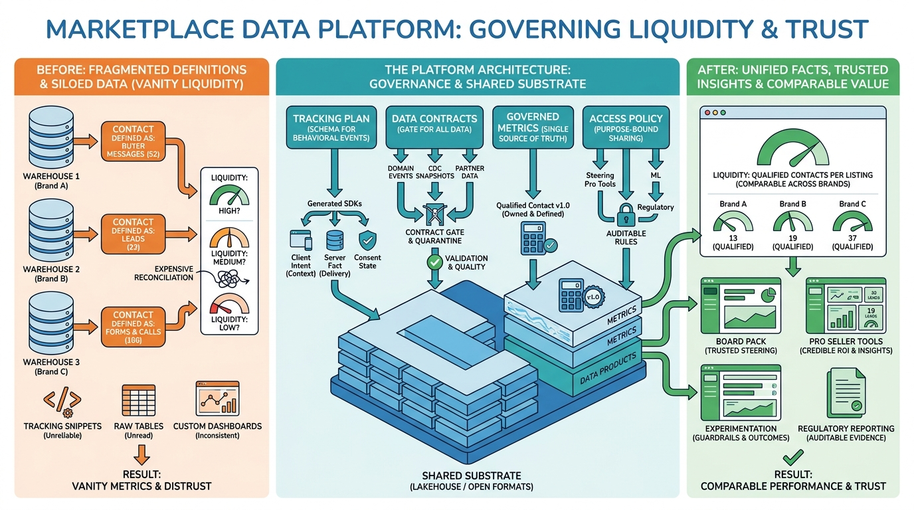

Part VII — PLATFORM: The Distributed System Underneath
Data Platform for Marketplaces: Events, Lakehouse and Data Products

Image generated by Google Gemini (gemini-3-pro-image-preview)
Part VII — PLATFORM: The Distributed System Underneath

Image generated by Google Gemini (gemini-3-pro-image-preview)